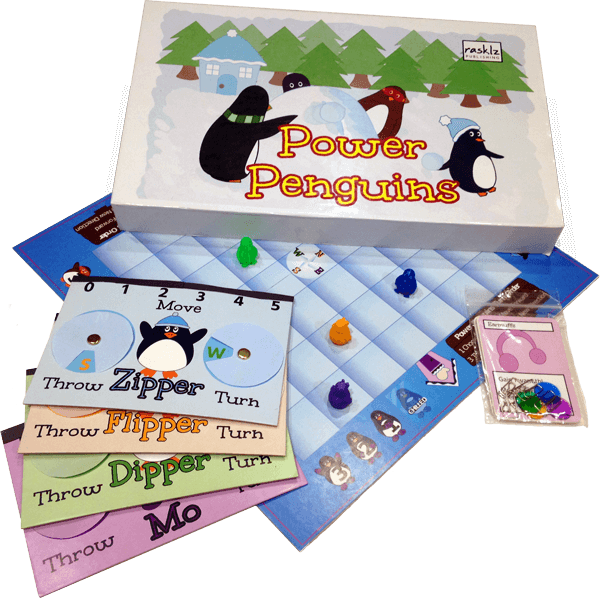

Power Penguins
Developed by Rasklz Publishing
Power Penguins WebsitePower Penguins is a family-oriented board game created by Ryan Morgenlander, in which up to four players battle each other to be the ultimate snowball champion. Each turn, players select their actions for the turn—how far to move, where to throw their snowballs, and where to face next—simultaneously, in secret. The idea was to emulate how people play things like laser tag, simultaneously planning their strategies and anticipating their opponents' moves.
Rasklz did launch a Kickstarter in 2015, but in the end, as with many game dev projects, we shelved this one in favor of others that playtested better.
My role in all this...
The core game idea was Ryan's, but I did help brainstorm ideas of how to turn the mechanics into physical components, including the selector cards we prototyped, as well as contribute small refinements to wording. I also contributed some of the art on the prototype—most notably, designing box art that referenced important game mechanics, including throwing, dodging, hiding behind the snowbank, and going home when chilled. And, I set up the online presence for Power Penguins and Rasklz while we developed the game, which I have continued to do for Rasklz after Power Penguins was shelved.